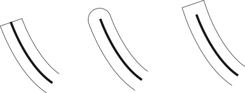

Enumeration
GskLineCap
since: 4.14
Description [src]
Specifies how to render the start and end points of contours or dashes when stroking.
The default line cap style is GSK_LINE_CAP_BUTT.
New entries may be added in future versions.

.
Available since: 4.14
Members
-
GSK_LINE_CAP_BUTT -
Start and stop the line exactly at the start and end point.
- Value:
0 - Available since: 4.14
- Value:
-
GSK_LINE_CAP_ROUND -
Use a round ending, the center of the circle is the start or end point.
- Value:
1 - Available since: 4.14
- Value:
-
GSK_LINE_CAP_SQUARE -
Use squared ending, the center of the square is the start or end point.
- Value:
2 - Available since: 4.14
- Value: